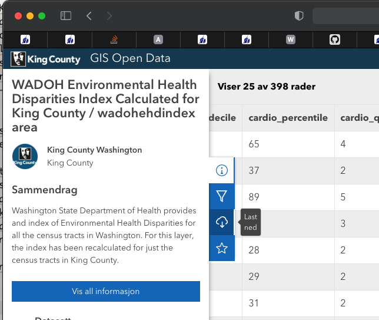
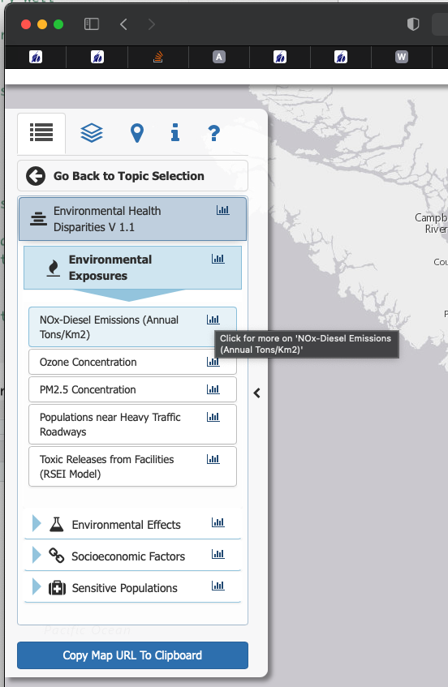

# Foreslår at dere kaller kartet som inneholder dataene for kc_wadoh_map
kc_wadoh_map <- kc_wadoh_map %>%
select(
GEO_ID_TRT,
EHD_percen,#Environmental Health Index, weighted score many vars
linguist_2,#Pop. age 5+ speaking English less than "very well"
poverty_pe,#Percentage people living in poverty
POC_percen,#People of Color in percentage of pop. in tract
transporta,#% of income spent on transportation median family in tract
unemploy_2,#percentage unemployed
housing_pe,#% of households in group "Unaffordable Housing" (>30% inc.)
traffic_pe,#% of pop. near heavy traffic roadways
diesel,# nox consentration
ozone,# ozone consentration
PM25, # consentration of Particulate Matter in air
toxic_rele, # Toxic release from factories
hazardous_, # Hazardous Waste Treatment Storage and disposal Facilities
lead_perce, # measure of Lead paint in houses
superfund, # Proximity to contaminated sites on national list
facilities, # Proximity to Risk Management Plan Facilities
wastewater, # Proximity to wastewater facilities
sen_pop_pe, # % pop. over 65
socio_perc # score social economic determants, low best
)Oppgavetekst termpaper MSB205; oppdatert 2022
I denne oppgaven skal dere analysere et kjent datasett fra Kaggle kalt House Sales in King County, USA. King County ligger i staten Washington og inneholder bl.a. byene Seattle og Redmond (Microsoft sitt hovedkvarter). Datasettet innholder ca. 27000 observasjoner med et rikt utvalg variabler som beskriver ulike egenskaper ved de solgte husene. I tillegg har man salgsprisen og geografiske koordinater (long, lat) for hver observasjon. De ulike variablene er beskrevet i en kommentar fra Nova19 i diskusjonsforumet for siden linket til ovenfor. De registrert salgene er fra 2014-2015. Den eksakte perioden finner dere i dataene.
Det som mangler i datasettet er imidlertid variabler som beskriver området hvor husene ligger. Heldigvis har vi rik tilgang til data om dette også. Dette er data som bruker «census tracts» fra census-en i 2010, men er fra American Community Survey fra perioden 2010 til 2020. ACS er utvalgsundersøkelser som blir gjort kontinuerlig mellom de store «census-ene» som bare skjer hvert tiår. Undersøkelser kan strekke seg over flere år, men de variablene vi skal bruke samsvarer nokså godt med perioden 2014-15. Vi skal både bruke ACS data direkte og bearbeidet i form av en Environmental Health Disparities Index utarbeidet av Washington State Department of Health for hele staten Washington. Vi skal imidlertid benytte et subset tilbudt av King County her. Trykk på nedlastingsikonet vist i bildet under for å laste ned datasettet. Dere kan på neste side velge format. Der velger dere shape-fil formatet.

Denne shape-filen inneholder EHD indeksen, men også variablene indeksen er utarbeidet fra. I tillegg er det mange variabler som vi ikke trenger. For å lette arbeidet får dere følgende tidyverse funksjon som vil velge ut de variablene vi potensielt skal bruke.
En nærmere forklaring av variablene får dere ved å gå inn på siden og klikke på ikonet for stolpediagram. Se bildet under.

I tillegg til disse dataene skal vi også lage en variabel for samlet familie inntekt i de ulike områdene. Dette er mer «rå» data og angir for hvert av 398 «tracts» hvor mange familier det totalt er i området og hvor mange som er i hvert av totalt 16 inntektsintervaller (pluss en for totalt antall familier i en «tract»). Vi skal slå disse sammen til tre grupper, lav-inntekt, middels-inntekt og høy-inntekt.
Filen er en liten del av en stor pakke med data som også inneholder «census tract map» for 2010 cencus som vi trenger i analysene. Dataene kan lastes ned fra denne siden. Trykk Open oppe i høyre hjørne for å laste ned et zip-arkiv. Les dokumentet «Term of Use», spesielt punkt 7, og pass på å legge det de ber om inn i en fotnote i termpaperet. Når dere har pakket ut arkivet vil dere finne en CatalogReports mappe. Åpner dere OpenDataCatalog.htm filen i en nettleser vil dere finne en oversikt over dataene som er tilgjengelig. Vi vil benytte datafilen acs_b19101_familyincome.dbf. Formatet .dbf er et PC database format fra 1990 tallet (dbase4). Filen kan åpnes i R med funksjonen read.dbf() fra pakken foreign. Tabellen er dokumentert her. Definer 0-35000 som low, 35000-100000 som mid, 100000 - som high. Variabler som begynner med E er estimerte verdier, mens M angir «margin of error» som vi ikke bryr oss om her.
I mappen vil dere finne flere kart i shape-file format. Vi trenger kartene tracts10.* og tracts10_shore.*. Pass på at dere laster de riktige kartene. Alle område (census-tract) variablene må legges inn i disse to kartene før vi gjør en «spatial join» med hus-dataene fra Kaggle. Merk at King County benytter en Arcgis løsning fra ESRI, så census kartene benytter en spesiell ESRI projeksjon. Jeg anbefaler sterkt at dere endrer alle kartene dere bruker til projeksjonen EPSG:2926. Vi skal beregne avstander ut fra kartene så vi kan ikke jobbe med geografiske koordinater.
Når dere har regnet ut de tre variablene må disse legges til i tracts10 og tracts10_shore kartene. Dette er to versjoner av census-tracts kart. Vi skal senere avgjøre hvilket som er best å bruke.
Vi skal også lage en variabel som benytter opplysningene fra husdatasettet. Før vi gjør det bør vi ordne litt i datasettet. Datasettet inneholder enkelte multiple salg i perioden (dvs. enkelte hus har blitt solgt flere ganger i perioden 2014-2015). Vi vil bare benytte det siste salget. Lag nye variabler year, month og day ut fra date og sorter salgene «descending» vha. arrange(). Brukt så funksjonen distinct() fra Tidyverse for å plukke det siste salget, i tilfelle det er flere salg.
Vi skal også lage en variabel som angir avstand til CBD (Central Business District) i Seattle. Gå til wikipedia siden for Seattle og klikk på koordinatene oppe i venstre hjørne. Du får da tilgang til koordinater (longitude, latitude) i desimal. Vi bruker dette punktet som koordinater for CBD. Regn ut avstanden fra hver observasjon til dette punktet i luftlinje (se st_distance()) og konverter avstanden til kilometer vha. units::set_units(). Kall variabelen for dist_cbd.
Når alle variablene er på plass i de to typene kart, punkt for husene, polygon (eller tracts) for acs data må vi binde områdevariablene til de respektive husene (bruk sf:st_join()). Før dette gjøres dobbelsjekk at projeksjonen er EPSG:2926 og lagre alle kartene i geopackage format.
Utfør spatial join både for tracts10 og tracts10_shore. Sjekk områdevariablene vha. summary(). Har dere gjort ting riktig (dvs. som meg ;-)) vil dere se at for tracts10 er det 1 hus som har NA for samtlige områdevariabler. For tracts10_shore er det derimot 26 hus med NA for disse variablene. Ta geopackage kartene inn i QGIS og prøv å finne ut hva som har gått galt med tracts10_shore. Hint! Zoom inn på hus som ligger langs strandlinjen.
Bruk data fra tracts10, men slett den ene observasjonen som har NA verdier (alternativet er å redigere koordinater).
Ta kartet med hus-observasjonene, inklusive census-tract variablene, inn i GeoDa og utfør en EDA for dataene. Er det noe mønster som utpeker seg når det gjelder priser eller de andre variablene? Bruk f.eks. Bivariate Local Morans I for å finne ut hvor vi finner små og dyre boliger, store og dyre boliger osv.
Etter EDA skal dere utvikle minst tre hedonske modeller, en med bare hus-karakteristika, en der dere benytter relevante hus-karakteristika og flere områdevariabler og til slutt en modell der dere benytter bare EHD indeksen for å beskrive området huset ligger i. Sammenlign de tre modellen og undersøk vha. Morans I hvor mye «spatial effects» det er i residualene fra de tre modellene.
Husk at:
- man ofte benytter loglog modeller for hedonske modeller
- at log transformasjon av variabler kan gjøres direkte i formula uttrykket i R
- at log(0) ikke er definert. Dette løses ofte med å legge til 1 til variabler som inneholder 0 verdier.
- operasjonene +, * osv. har en spesiell betydning i R formulas og må «beskyttes» med
I()funksjonen hvis de skal benyttes i et formula-uttrykk, f.eks.I(log(var1 +1)).
Funksjonen huxtable::huxreg() er glimrende for å vise resultatet for ulike regresjonsmodeller ved siden av hverandre i en tabell. Rapporter estimatene med tilhørende t-verdier som er det vanligste innen økonometri.
Husk videre at innen økonometri er man opptatt av heteroskedastisitet, så benytt coeftest() fra lmtest for å få robuste «standard error» estimat. (sett type argumentet til “HC4” eller “HC3”. “HC1” gir default Stata korreksjon)
Datasettet vårt spenner over en tidsperiode så benytt dummy-variabler for månedene i datasettet (gjøres effektivt vha. factor() i R). Bruk linearHypothesis() fra car pakken for å teste om vi trenger tids-dummier, dvs. utfør en simultan test på om alle tids-dummiene kan settes lik 0. Også her bør vi benytte robuste standardfeil, så sett opsjonen white.adjust = “hc3” eller “hc4” eller “hc1”.
Bishop et al. (2020) er en god kilde for vurderinger rundt hvordan bygge en god hedonske modell.
Spatial regressions
LeSage (n.d.) er i tillegg til Anselin (1988) kildene vi bygger på for å utføre «spatial regressions» på et subset av disse dataene.
Etter å ha bygget hedonske modeller for hele datasettet og fastslått at vi har «spatial effects» i residualene vil vi fortsette med såkalte «spatial regressions». Et viktig spørsmål her er hvilken romlig regresjonsmodell som best fanger disse romlige effektene. Vi skal se på valg av modell både vha. Anselin (1988) metode og LeSage (n.d.); .
Våre data er punkt-observasjoner. Vi kan da definere naboer ut fra et avstandskriterium, men vi vil heller benytte «k-nearest» som ofte blir anbefalt som et bedre kriterium (se f.eks. Bivand, Pebesma, and Gómez-Rubio (2013) s. 247--248 for en diskusjon av problemene med et avstandskriterium). Vil vil studere modellene med hhv. 3 nærmeste naboer og 10 nærmeste naboer.
For at analysen skal bli håndterbar vil vi bruke bare et utvalg. Et forskjellig utvalg for hver gruppe, hentet fra det totale datasettet. For 9 soner som har mindre enn seks observasjoner vil samtlige observasjoner i disse sone inngå i alle tre datasettene. For de resterende sonene vil det bli valgt tilfeldig 5 observasjoner fra hver sone (ulik «seed» for de tre gruppene) slik at hver gruppe får et datasett med knapt 2000 observasjoner. Disse datasettene vil bli gjort tilgjengelig for hver gruppe i form av en geopackage fil (jeg vet, jeg er alt for snill ;-)).
- Send en epost med navn på de som deltar i gruppen. Vi benytter to studenter per gruppe og eventuelt en med tre hvis oddetall.
Vi vil betrakte prisdannelsen for hus som et lokalt fenomen jmf. LeSage (n.d.) og vil estimere og teste de nestede modellene SDEM, SEM, SLX og standard lm (ols) for hhv. 3 og 10 naboer vha. en likelihood ratio test (LR.Sarlm() fra pakken spatialreg). Vi vil også benytte Anselin (1988) angrepsmåte (SAR, SEM og lm (OLS))) med Lagrange Multiplier Tests (gjøres enkelt vha. lm.LMtests(vår_lm, listw = vår_w, test="all") fra pakken spdep.
Husk at moran.plot(residuals(vår_mod), listw = vår_w, pch = ".") er et flott verktøy for å sjekke hvor mye «spatial interactions» som er igjen i residualene våre.
Til slutt vil vi trekke nye 2000 observasjoner tilfeldig fra det fulle datasettet for å sjekke om resultatene våre er robuste mht. teknikken vi brukte for å få et utvalg med observasjoner fra samtlige soner (som har observasjoner, noen få «census tracts» er helt uten observasjoner). Vi genererer nye vektmatriser for dette datasettet med 3 og 10 naboer. Bruk samme «seed» som ovenfor for å trekke de 2000 observasjonene.
Hva som må gjøres
Study the paper by Bishop et al. (2020) . Give a short summary (around 2-3 pages) of this paper focusing on the what is presented on pages 1-13 (until Difference-in-difference research design). In your summary you should carefully answer the following questions:
Explain what is meant by Rosen’s first and second stage.
Explain shortly how marginal willingness to pay for an environmental attribute can be revealed via Rosen’s first step.
Why could it be important to define a housing market as a single metropolitan (or travel to work) area and studying a relatively short period of time, when estimating
hedonic price function?
Explain intuitively, by using an example, why it is important to avoid omitted variable bias when estimating a hedonic price model.
Last ned House Sales King County, USA fra Kaggle
Sjekk definisjonen på de ulike variablene
Les .csv filen med House Sales King County inn i R
Sorter salgene «descending» etter dato, siste først (dvs. mai 2015, april 2015 osv.)
Bruk
dplyr::distinct()til å velge siste salg der vi har multiple salg av samme eiendom.Bruk
st_as_sf()til å konvertere house data til et sf objekt vha. long lat og sett til geografisk projeksjon, dvs EPSG:4326.Konverter dette sf objektet så til projeksjonen EPSG:2926.
Bruk koordinatene fra Seattles wikipedia-side (øvre høyre hjørne, klikk linken så får dere koordinatene i desimal form) og sett dette punktet som CBD for Seattle.
Konverter dette punktet til EPSG:2926. Finn avstanden mellom dette punktet og samtlige hus i datasettet i luftlinje. Konverter avstandene til km og legg dem i variabelen dest_CBD i kartet med husdata.
Last ned WADOH Environmental Health Disparities Index Calculated for King County
Les inn .shp filen WADOH King County.
Plukk ut variablene angitt tidligere i oppgaven.
Transponer kartet til projeksjonen EPSG:2926
Lag inntektsvariabelen som beskrevet ovenfor. Legg disse til som nye variabler i WADOH King County.
Last ned
Last shape filene tracts10 og tracts10_shore fra censusSHP mappen (vær nøye med at dere velger 10 varianten)
Bruk en
left_join()for å få dataene fra WADOH King County inn i begge disse karteneTransponer begge kartene til EPSG:2926
Gjør en «spatial join» av husdata med både tracts10 og så tracts10_shore
Sjekk områdevariablene fra WADOH vha. summary for tracts10 og tracts10_shore
Forklar hvorfor vi har mange flere NA (25 flere) i tracts10_shore enn i tracts10. En hjelp kan være å lagre både husdataene, tracts10, og tracts10_shore som geopackage filer og så ta dem inn i Qgis. Legg punktene for husene øverst, tracts10 og tracts10_shore under. Ser dere nå hva som går galt med tracts10_shore?
Observasjonen med id 3518000180 fra tracts10 har bare NA for områdevariablene. Dropp denne, eller eventuelt editer koordinatene og kjør spatial join på ny.
Lag en faktor-variabel av år og måned ut fra Date, kall den year_month.
Slett .gpkg filen for husdataene og lagre den på ny. (Får ikke overskrive filen derfor sletter vi den før vi oppdaterer. Alternativt kan vi sette opsjonen append til FALSE.)
Utfør EDA i GeoDA
Lag et nytt prosjekt i GeoDA
Last inn husdataene via .gpkg filen lagret ovenfor
Generer en vekt fil utfra 3 og 10 nærmeste naboer
Prøv å finne ut hvor de små og dyre, de store og dyre, de billige og store og de små og billige boligene ligger (prøv Bivariate Morans I)
Dere kan eventuelt også eksperimentere med innledene SAR, SEM og lm modeller i GeoDa
Returner så til Quarto dokumentet.
Gi en kort sammenfatning av funnene fra EDA.
Definer mint tre hedonske modeller. Ta utgangspunkt i Bishop et al. (2020) og diskuter valgte modeller utfra denne.
En null modell med bare huskarakteristika og tids-dummier (year_month)
En modell med huskarakteristika, dist_CBD, relevante tract-variabler og tids-dummier.
En modell med huskarakteristika, dist_CBD, EHD indeks (eventuelt inntektsvariabel) og tids-dummier.
Rapporter de tre modellen i en regresjonstabell (
huxtable::huxreg()). Bruk robuste standard errors. Rapporter t-verdien som er det vanlig innen økonometri.Test og diskuter hvilken modell som er best. (Ta også en titt på
plot(lm_navnet))
Bruk en simultan test på tids-dummiene for å avgjøre om vi trenger disse i modellen (
car::linearHypothesis()) med opsjonenwhite_adjust =“hc3” eller “hc4” eller også eventuelt “hc1” hvis dere ønsker å bruke Stata sin default.Spatial Regressions
Last gruppens utvalg fra relevant .gpkg fil (tallene er seed verdiene som er brukt for å genererer utvalgene)
Formuler modellen dere vil bruke. Kjør den som lm (OLS) modell og bruk
lm.morantest()ogmoran.plot()på residualene for å avgjøre om vi har uforklarte spatial effects i residualene.Generer vektmatrise ut fra k=3 og k=10 nærmeste naboer
Bruk Anselin (1988) sin teknikk med Lagrange Multiplikator test vha.
lm.LMtests()og diskuter hvilken modell (SAR, SEM eller lm (OLS)) som synes å være den beste.Bruk så teknikken med nestede modeller anbefalt av LeSage (n.d.). Diskuter først om vi står overfor et lokalt eller globalt fenomen. Bruk opsjonen
durban = as.formula(~ variabelnavnene du vil ha impacts for). Dette for å slippe impacts for tidsdummiene. Test så de nestede modellne vha. likelihood ratio test. Hvilken modell synes å være den beste?For alternativet k=10 (10 nærmeste naboer). Bruk
moran.plot()på residualene fra de ulike modellene for å illustrere hvor godt hver modell fjerner «spatial effects» fra residualene.
Til slutt skal vi sjekke om utvalgsteknikken beskrevet ovenfor (5 hus fra hver trakt) har betydning for resultatene. (Sjekk på robusthet).
Velg et utvalg på 2000 fra det store hus-datasettet.
Lag vektmatriser for k=3 og k=10
Synes samme modell fremdeles å være den beste?
Diskuter om resultatene er kvalitativt like.
Oppsummering/konklusjon
Husk å sette en passende tittel på arbeidet.
Lykke til!
R pakker dere kan ha bruk for
Jeg brukte følgende pakker når jeg «løste» oppgaven.
library(tidyverse)
library(lubridate)
library(sf)
library(here)
library(tmap)
library(sp)
library(spdep)
library(spatialreg)
library(lmtest)
library(sandwich)
library(units)
library(car)
library(foreign)Referanser
Anselin, Luc. 1988. Spatial Econometrics: Methods and Models. Springer Netherlands. https://doi.org/10.1007/978-94-015-7799-1.
Bishop, Kelly C., Nicolai V. Kuminoff, H. Spencer Banzhaf, Kevin J. Boyle, Kathrine von Gravenitz, Jaren C. Pope, V. Kerry Smith, and Christopher D. Timmins. 2020. “Best Practices for Using Hedonic Property Value Models to Measure Willingness to Pay for Environmental Quality.” Review of Environmental Economics and Policy 14 (2): 260–81. https://doi.org/10.1093/reep/reaa001.
Bivand, Roger S., Edzer Pebesma, and Virgilio Gómez-Rubio. 2013. Applied Spatial Data Analysis with r. Springer New York. https://doi.org/10.1007/978-1-4614-7618-4.
LeSage, James P. n.d. “What Regional Scientists Need to Know about Spatial Econometrics,” 31.